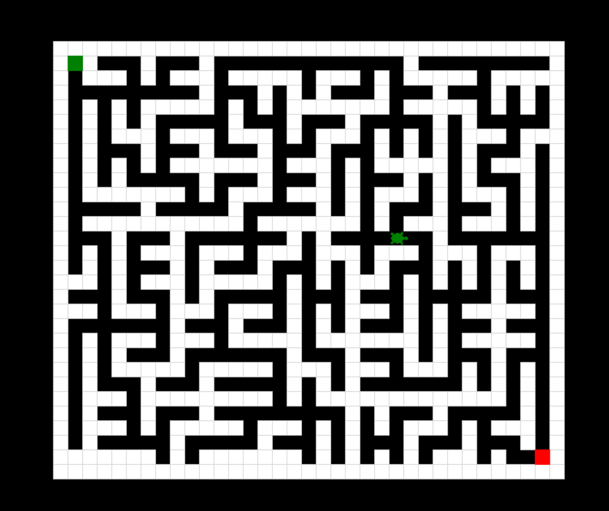

Currently a computer science student, fascinated by every field
related to technology, from development to emerging innovations.
Skills
Projects

Maze Game
A simple interactive mini-game developed in Python. Future improvements might include Wilson’s algorithm or the “Recursive Back tracker” algorithm to generate the maze each time.